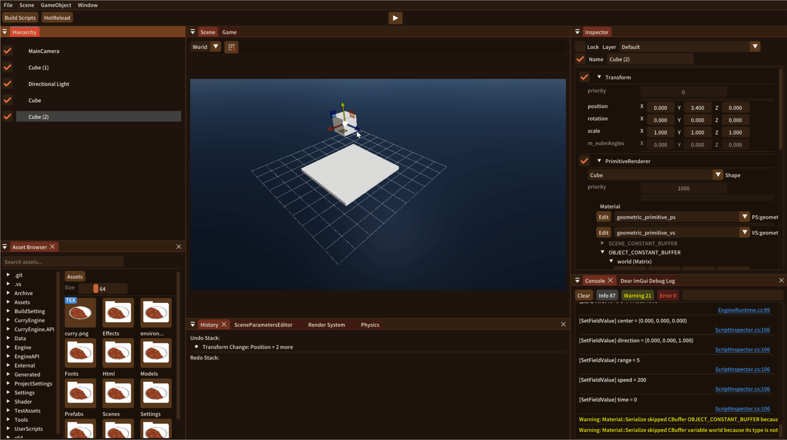
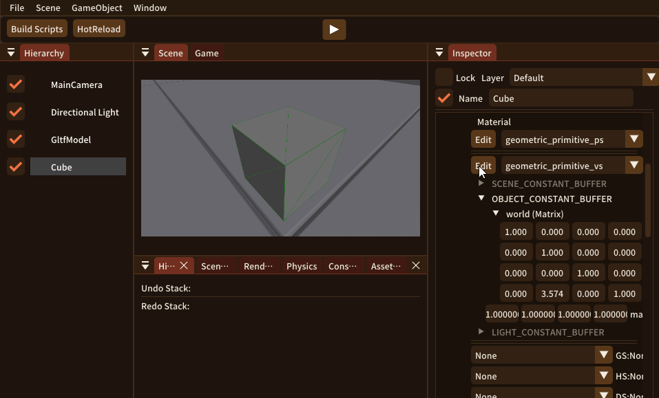
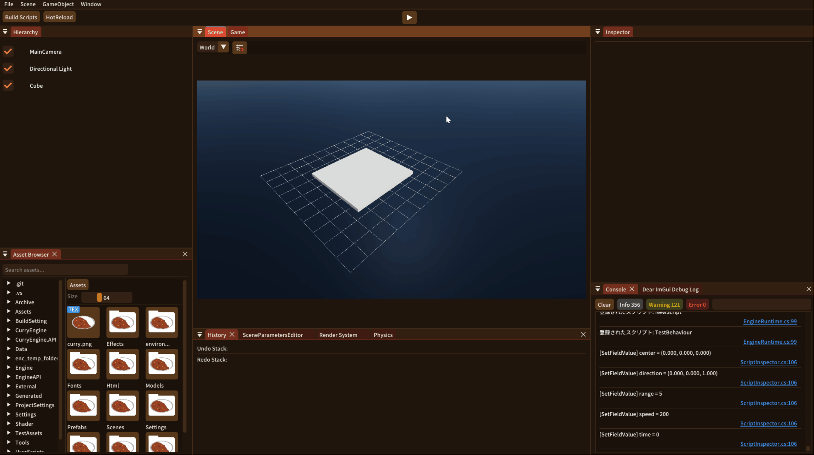
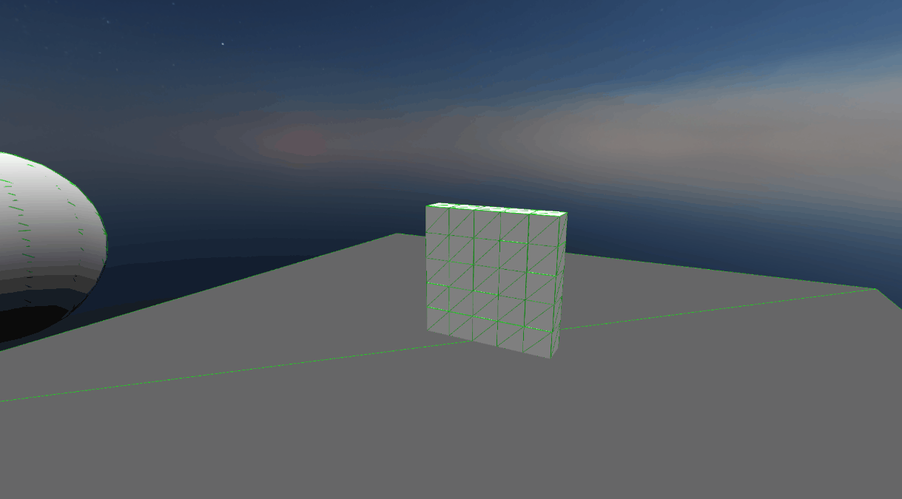

CurryEngine
概要
| 作品ジャンル | ゲームエンジン |
|---|---|
| コンセプト | ラピッドイテレーションを実現するゲームエンジン |
| 制作期間 | 2025年3月 ～ 現在（約1年4ヶ月） |
| 制作人数 | 1人（個人制作） |
| 開発環境 | Visual Studio 2022 / C++ / C# / DirectX11 |
作品説明
CurryEngineは、ゲーム開発における開発効率の向上を目的として開発しているゲームエンジンです。 ゲーム開発では、アイデアを素早く試し、改善を繰り返せる環境が重要だと考えています。 そのため、変更を素早く反映できる仕組みや各種エディタ機能を実装し、ラピッドイテレーションを実現する開発環境の構築に取り組んでいます。 現在は、シェーダーエディタ、C#スクリプティング、PhysXを用いた物理演算、エフェクトエディタなどの機能を実装しています。 今後も、ゲーム制作をより快適かつ効率的に行えるよう、機能の拡充を続けていく予定です。
実装内容
シーンエディタ

- シーン構築を効率化するため、シーンエディタを実装しました。
- オブジェクトの配置・移動・回転・スケーリングを直感的に操作できます。
- Undo/Redoや複数選択など、チーム制作で頻繁に使う機能を優先して実装しました。
- 今後は、ドラッグによる複数オブジェクトの範囲選択や、ヒエラルキー上でのキーボード操作に対応するなど、より使いやすいシーンエディタへ発展させていく予定です。
シェーダーエディタ

- 見た目の調整を素早く試せるよう実装しました。
- エディタ上でテクスチャの変更やシェーダーのパラメータの編集を行うことができます。
- また、ホットリロードに対応しているため、シェーダーコードの変更を起動中のエンジンへ即座に反映できます。
- 今後はマテリアルエディタへ発展させ、将来的にはノードベースの編集にも対応する予定です。
C#スクリプティング

- 開発効率向上のため、ゲームコードをC#で記述できるスクリプティング機能を実装しました。各種エディタと組み合わせることで、素早い試行錯誤を実現しています。
- 当初はゲームコードもC++でしたが、変更のたびにビルドや再起動が必要で、開発効率が低下していました。そのため、ゲームコードのみをC#へ移行し、エンジンはC++で開発する構成に変更しました。
- C#スクリプトは.NET CoreCLR上で実行し、アセンブリの再読み込みによって、エンジンを再起動することなくスクリプトの変更を反映できます。
- C++パーサーを拡張し、C#バインドコードを自動生成する機能を実装しました。これにより、ラッパーコードの手動作成が不要になり、保守性が向上しました。
PhysXを用いた物理演算

- リアルな物理挙動を実現するため、PhysXを導入しました。
- Unityでも採用されている実績のある物理エンジンであり、私自身もUnityのワークフローを参考にしているため採用しました。
- 現在はRigidBodyやColliderを実装しており、今後はジョイント機能にも対応する予定です。
エフェクトエディタ
- 演出を効率よく調整できるよう、エフェクトエディタを実装しました。
- パラメータをリアルタイムで編集でき、JSON形式で保存できます。
- チーム制作で実際に使用してもらい、メンバーからのフィードバックをもとに改善を進めています。
- 今後はカーブエディタの追加や、ヒエラルキーと同様の操作性を取り入れるなど、より使いやすいエディタへ発展させていく予定です。
今後
ラピッドイテレーションをさらに追求するため、以下の機能の実装・改善に取り組んでいきます。
- アセットの非同期ロードによる操作性の向上
- ランタイムとエディタの分離による保守性・拡張性の向上
- ノードベースに対応したマテリアルエディタの実装